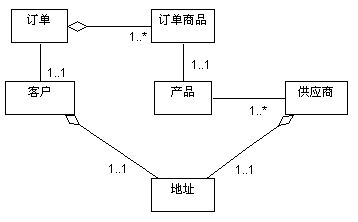

|
目的
|
定义分析类所依赖的其他类。
定义该类必须了解的其他分析类中的事件。
定义该分析类负责保留的信息。
|
为了履行职责，类通常依赖于其他类来提供所需要的行为。众多关联记录类之间的关系，并帮助我们了解类的结合；更好地了解类结合并尽可能减少结合情况，这可帮助我们构建更好、更有弹性的系统。
以下步骤定义类的属性以及类之间的关联：
属性由类用于存储信息。特别地，属性在信息符合以下条件的情况下使用：
-
“按照值”被引用；也就是说，重要的只是信息的值，而不是它的位置或对象标识。
-
由所属的对象独自“拥有”；没有其他对象引用该信息。
-
由那些只获取、设置信息或对信息执行简单转换的操作访问；除了提供值外，信息没有“真正”的行为。
另一方面，如果信息有复杂的行为、由两个或多个对象共享或者“通过引用”在两个或多个对象间传递，该信息就应该建模为单独的类。
属性名称应该是一个名词，清楚地说明属性具有哪些信息。
属性的描述应该描述属性中要存储什么信息；当存储的信息从属性名称来看很明显时，这是可选的。
属性类型是属性的简单数据类型。示例包括字符串、整数、数字。
首先研究将行为分发给分析类中生成的交互图中的链接。类之间的链接表示两个类的对象需要彼此交流以执行用例。一旦我们开始设计系统，这些链接就可以用几种方式实现：
-
对象可能有“全局”范围，在这种情况下，系统中的任何对象都可以向它发送消息。
-
一个对象可以作为参数传递给第二个对象，此后，它就可以向被传递的对象发送消息。
-
对象可能会与发送消息的目标对象有永久关联。
-
对象可以在操作范围内创建并销毁（即“临时”对象）－ 这些对象被认为对操作而言是“局部”的。
但是，在类的“生命”的这一早期时刻就开始作出这些决定，这太早了：我们还没有足够的信息来作出经过深思熟虑的决定。因此，我们在分析中创建关联和聚集来表示（并“携带”）必须在两个类的对象之间发送的任何消息。聚集是关联的一种特殊形式，表示对象参与了“整体／部分”关系（请参阅技术：关联和技术：聚集））。
我们将在任务：类设计中改进这些关联和聚集。
为每个类绘制一张类图，显示每个类与其他类的关联：

部分订单输入系统的分析类图示例
只关注实现用例所需的关联；不要添加您认为“可能”存在的关联，除非它们是必需的（基于交互图）。
给出关联角色的名称和多重性。
-
角色名称应是一个名词，说明关联的对象相对于关联对象而扮演的角色。
-
假设多重性为 0..*（零到许多），除非有明确证据表示其他内容。多重性为零，则意味着关联是可选的；确保这是您希望的情况；如果对象可能不存在，使用该关联的操作就必须作相应的调整。
-
可将多重性指定为更窄的范围（如 3..8）。
-
在多重性范围内可以指定概率。因此，如果多重性为 0..*，而在 85% 的情况下它应在 10 到 20
之间，则记录下来；该信息在设计期间将相当重要。例如，如果要使用关系数据库来实施持久性存储器，较窄的范围将有助于更好地组织数据库表。
请撰写一份关联的简述，表明如何使用关联，或者该关联代表什么关系。
对象有时需要知道，事件在某个“目标”对象中何时发生，而“目标”不必知道在事件发生时要求得到通知的所有对象。预订关联是显示这一事件通知依赖关系的简单表示法，它允许我们简洁明了地表示这种依赖关系。
两个对象之间的预订关联表明，当预订的对象发生特定事件时，将会通知预订方对象。预订关联有一个条件，定义使订户得到通知的事件。关于更多信息，请参阅技术：预订关联
预订关联的条件应该根据抽象属性来表示，而不应根据其特定的属性或操作。这样，关联方对象得以保持对所关联实体对象的内容（将会更改）的独立性。
以下情况下需要预订关联：
-
如果某一对象受另一对象中发生的事件的影响
-
如果必须创建新对象来处理某个事件，例如在错误发生时，则必须创建一个新窗口来通知用户
-
如果对象需要知道另一个对象何时实例化、何时更改或者何时被销毁
“预订的”对象通常是实体对象。实体对象通常被动地存储信息，其任何行为一般都与它们的信息存储职责相关。 许多其他对象常常需要知道对象实体何时更改。预订关联使实体对象不必了解所有这些另外的对象 －
它们只“表示”对实体对象感兴趣，并会在实体对象更改时收到通知。
现在这一切还只是“分析手法”：在设计中我们必须定义这种通知到底是如何起作用的。我们可能会购买通知框架，或者我们可能必须自行设计并构建一个框架。但此时只要记住，有通知存在就足够了。
关联的方向显示，只有预订方对象知道两个对象之间的关系。预订的描述完全包含在预定对象中。反过来，相关联的实体对象是以常规方式来定义的，没有考虑其他对象也可能对该对象的活动感兴趣。这也意味着，可以对模型添加或删除预订方对象，而不更改所预订的对象。
|